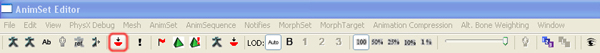
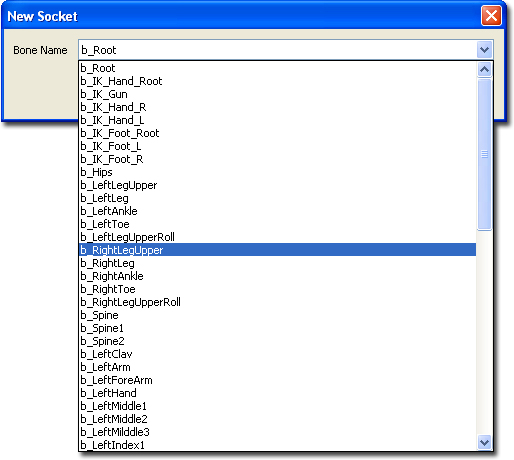
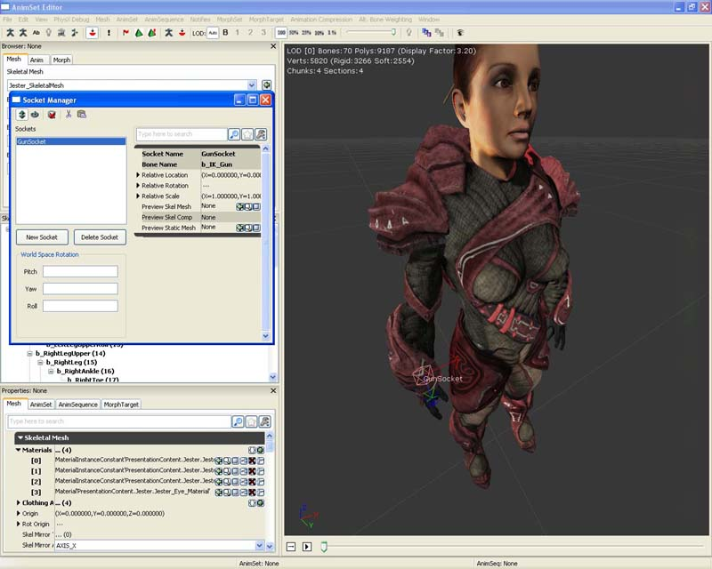
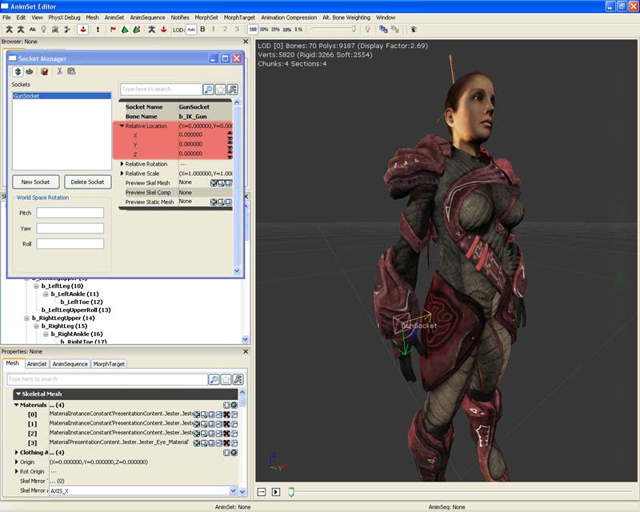
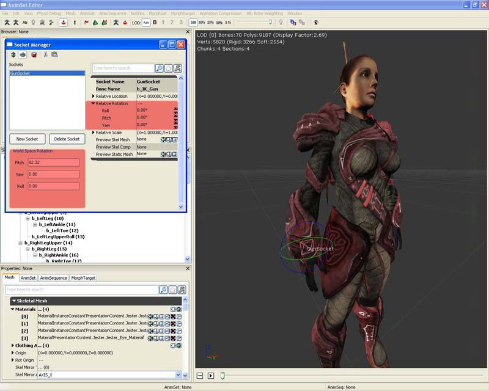
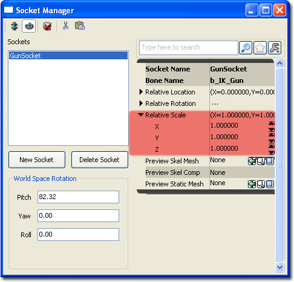
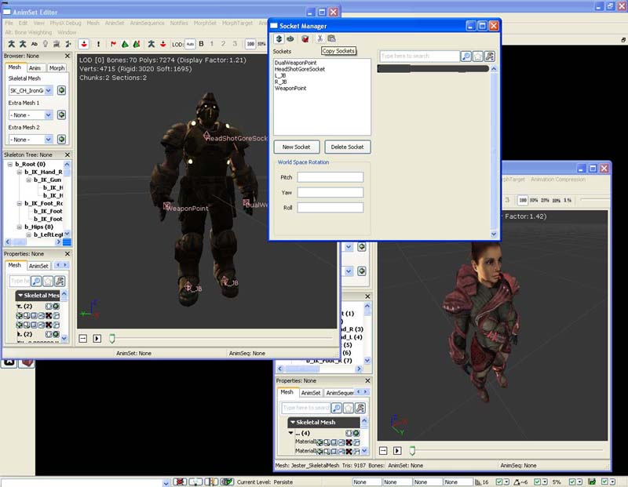
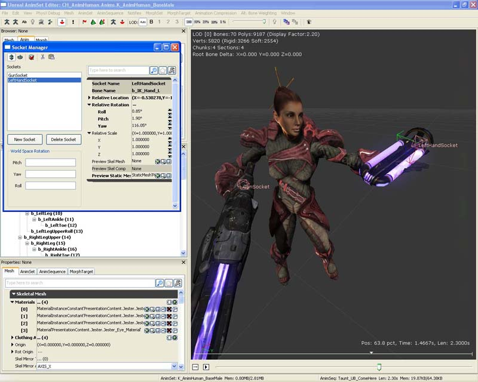
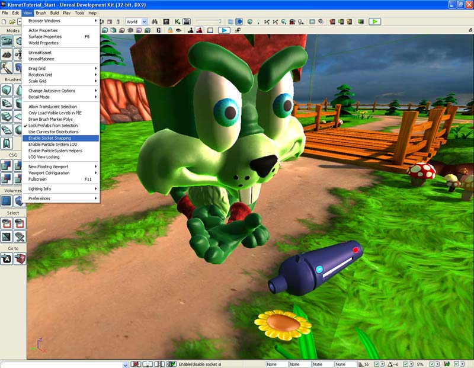

UDN
Search public documentation:
SkeletalMeshSocketsCH
English Translation
日本語訳
한국어
Interested in the Unreal Engine?
Visit the Unreal Technology site.
Looking for jobs and company info?
Check out the Epic games site.
Questions about support via UDN?
Contact the UDN Staff
日本語訳
한국어
Interested in the Unreal Engine?
Visit the Unreal Technology site.
Looking for jobs and company info?
Check out the Epic games site.
Questions about support via UDN?
Contact the UDN Staff
骨架网格物体插槽
_文档概述：关于向骨架网格物体添加命名插槽的指南，这个方法也可以用于在游戏中附加其它物体。 _文档变更记录：由 James Golding 创建。
概述
通常在游戏中，您将会想要将一个物体附加到人物的骨骼上。这或许是把一个武器附加到手上，或者是把一个帽子附加到头上。虚幻引擎 3 允许您在 AnimSet Editor（动画集编辑器）中创建插槽，将它们并列放置在骨架网格物体内的一个骨骼中。然后可以相对于这个骨骼平移、旋转和缩放插槽。同时还可以预览附加到插槽上的静态网格物体和/或骨架网格物体。它允许内容创建者轻松地为骨架网格物体创建插槽，然后告诉程序员要附加对象的插槽的名称。
插槽管理器
要为骨架网格物体打开 Socket Manager（插槽管理器），那么请在内容浏览器中找到这个骨架网格物体，然后双击它在动画集编辑器中打开。在工具栏上按下 Socket Manager（插槽管理器）按钮

点击这个按钮将会弹出浮动的 Socket Manager（插槽管理器）窗口。
- Translate Socket - 可以修改所选插槽的相对平移。
- Rotate Socket - 可以修改所选插槽的相对旋转。
- Clear Previews - 可以清除所有附加插槽的网格物体。
- New Socket - 可以打开 Create Socket（创建插槽）对话框。
- Delete Socket - 可以删除所选的插槽。
- Socket Properties - 所选插槽的属性面板。
- Socket List - 该骨架网格物体的所有插槽的列表。
- Copy Sockets - 可以将所有插槽复制到剪切板中。
- Paste Sockets - 可以从剪切板中粘贴所有插槽。
- World Space Rotation - 允许您在时间空间旋转的同时对所选插槽相对旋转进行调整。
创建插槽
要创建一个新的插槽，请在 Socket Manager（插槽管理器）中按下 New Socket（新建插槽）按钮。然后您将会看到一个组合框，它允许您选择您要附加到插槽上的骨骼。注意，您可以只选择 SkeletalMesh（骨架网格物体）的所有 LOD 中的骨骼。

只要您已经选中了这个骨骼，那么将会提示您为这个新的插槽输入一个唯一的（在这个骨架网格物体中是唯一的，不是在所有骨架网格物体中）名称。完成这项操作之后，就创建了一个新的插槽，并且可以在视口中看到它。
修改插槽
Socket Manager（插槽管理器）也可以用于修改插槽属性。在 Socket List（插槽列表）中选择您想要修改的插槽，然后会在 Socket Properties（插槽属性）项中显示它的属性。
相对位置
您可以使用两种方法调整插槽的相对位置。- 一种方法是直接在 Socket Properties（插槽属性）中通过扩展结构体设置相对位置 X、Y 和 Z 值。调整这些值将会更新视窗内插槽的相对位置。
- 另一种方法是将 Socket Manager（插槽管理器）设置为 Translate Socket（平移插槽）模式。要进行这项操作，请点击 Translate Socket（平移插槽）按钮。然后在视窗中，您可以使用平移窗体部件移动插槽。

相对旋转量
您可以使用三种方法调整插槽的相对旋转量。- 一种方法是直接在 Socket Properties（插槽属性）中通过扩展结构体设置相对旋转量的 Pitch、Yaw 和 Roll 值。调整这些值将会更新视窗内插槽的相对旋转量。
- 另一种方法是将 Socket Manager（插槽管理器）设置为 Rotate Socket（旋转插槽）模式。要进行这项操作，请点击 Rotate Socket（旋转插槽）按钮。然后在视窗中，您可以使用旋转窗体部件旋转插槽。
- 还有一种方法是使用 World Space Rotation（世界空间旋转）工具。这种方法适用于您需要插槽与世界空间中的对象对齐的情况。该工具将会进行必要的运算，并且相应地设置相对旋转量。关闭并打开 Socket Manager（插槽管理器）查看变更情况。

相对缩放量
您可以在 Socket Properties（插槽属性）内调整插槽的相对所放量，通过扩展结构体同时直接设置 X、Y 和 Z 值。调整这些值将会更新视窗内附加插槽的网格物体（如果存在）。
在 Skeletal Meshes（骨架网格物体）之间复制和粘贴插槽设置
如果您有多个骨架网格物体，它们可以共享常用的骨架或共享同一个骨骼名称，那么您可以在它们之间复制并粘贴插槽设置。它会帮助您提高开发进度，尤其是在那些您可以具有多个运行方式相同的游戏人的游戏中。注意，它将会复制所有地方的插槽。将不会覆盖现有插槽。如果您希望覆盖现有插槽，那么首先要删除它们。 在动画集编辑器中打开源骨架网格物体，然后打开 Socket Manager（插槽管理器）。点击 Copy Socket（复制插槽）。
在动画集编辑器中打开目标骨架网格物体，然后打开 Socket Manager（插槽管理器）。点击 Paste Socket（粘贴插槽）。 正如您所见，已经将所有插槽添加到了我的目标骨架网格物体中，没费什么力气。您不再需要亲手重新创建所有插槽！
正如您所见，已经将所有插槽添加到了我的目标骨架网格物体中，没费什么力气。您不再需要亲手重新创建所有插槽！

预览骨架网格物体和/或静态网格物体
通常需要在您调整插槽属性的时候查看附加给插槽的实际网格物体。它适用于您尝试将一些内容与诸如角色的手对齐的情况。在 Socket Properties（插槽属性）中，有两个名为 Preview Skel Mesh（预览骨架网格物体）和 Preview Static Mesh（预览静态网格物体）。通过在内容浏览器中选择一个静态网格物体或骨架网格物体，您可以按下绿色的使用箭头按钮设置这个字段。接下来它会显示在视窗中。您可以通过使用 Clear Previews（清除预览）按钮清除所有插槽预览网格物体。 带有 Gun（枪）插槽以及一个骨架网格附件的骨架网格物体。 带有 Gun（枪）插槽以及一个静态网格附件的骨架网格物体。
带有 Gun（枪）插槽以及一个静态网格附件的骨架网格物体。

视图插槽
显示在视窗中的插槽是粉红色的菱形，它的旁边是字体颜色为粉红色的名称。
 您可以通过打开 Socket Manager（插槽管理器）或者从“View（视图）”菜单中勾选“Show Sockets（显示插槽）”选项启动插槽渲染。
您可以通过打开 Socket Manager（插槽管理器）或者从“View（视图）”菜单中勾选“Show Sockets（显示插槽）”选项启动插槽渲染。

使用插槽
Unrealscript
您可以引用并使用骨架网格物体组件内的虚幻脚本中的插槽。检查骨架网格物体是否有插槽
您可以通过使用下面的代码段测试一个骨架网格物体在虚幻脚本中是否有插槽。您还可以通过查看返回的插槽引用获取插槽的属性。
if (SkeletalMeshComponent.GetSocketByName(SocketName) != None)
{
// 插槽存在
}
else
{
// 插槽不存在
}
获取插槽的世界位置和旋转量
您可以随时获取插槽在虚幻脚本中的位置和旋转量。它在您希望投射跟踪进行示例的时候很适用。
local Vector SocketLocation; // 您还可以使用变量在类实例内部全局存储它
local Rotator SocketRotation; // 您还可以使用变量在类实例内部全局存储它
if (SkeletalMeshComponent.GetSocketWorldLocationAndRotation(InSocketName, SocketLocation, SocketRotation, 0 /* Use 1 if you wish to return this in component space*/ )
{
// 对返回的插槽位置和旋转进行一些操作
}
else
{
// 插槽不存在
}
获取插槽的骨骼
您可以通过使用下面的代码段获取插槽的骨骼。
local Name SocketBoneName;
SocketBoneName = SkeletalMeshComponent.GetSocketBoneName(InSocketName);
if (SocketBoneName != '' && SocketBoneName != 'None')
{
// 对返回的骨骼执行一些操作
}
向插槽附加组件
您可以大量地将诸如粒子特效、骨架网格物体、平面实例或静态网格物体这样的组件附加给插槽。SkeletalMeshComponent.AttachComponentToSocket(Component, SocketName);
向插槽附加 actor
可以向插槽附加 actor，虽然从技术上看只是设置 actor 的位置和旋转量，使其与插槽匹配，然后使用 actor 附加方法附加它。附加的 actor 不应该阻塞，而且应该将 bHardAttach 设置为 true。 注意，为了将 Pawn 作为基类使用，必须将 bCanBeBaseForPawns 设置为 true。
local Vector SocketLocation;
local Rotator SocketRotation;
local Actor Actor;
if (SkeletalMeshComponent != None)
{
if (Archetype != None && SkeletalMeshComponent.GetSocketByName(SocketName) != None)
{
SkeletalMeshComponent.GetSocketWorldLocationAndRotation(SocketName, SocketLocation, SocketRotation);
Actor = Spawn(Archetype.Class,,, SocketLocation, SocketRotation, Archetype);
if (Actor != None)
{
Actor.SetBase(Self,, SkeletalMeshComponent, SocketName);
}
}
}
虚幻编辑器
您还可以在编辑器内将 actor 附加给骨架网格物体。 首先启用插槽对齐。
这样视窗将会渲染所有可见插槽。选择您想要附加的 actor。点击您希望附加给哪个插槽。 该 actor 目前处于这个插槽的位置和旋转量，并将其附加给拥有目标插槽的骨架网格物体组件的 actor。
该 actor 目前处于这个插槽的位置和旋转量，并将其附加给拥有目标插槽的骨架网格物体组件的 actor。